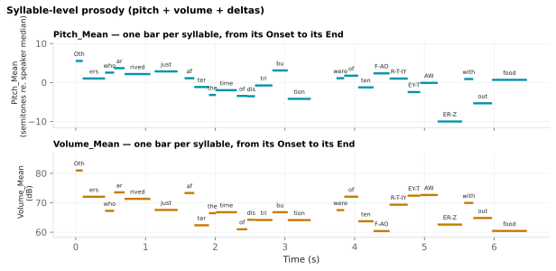

6.3.4Syllable-level prosody (pitch + volume + deltas)
Four per-syllable prosody columns in <stim>_syllables.csv, scaled-down analogues of the word-level pitch and volume features.
6.3.4.1What it is
Four per-syllable prosody columns in <stim>_syllables.csv, scaled-down
analogues of the word-level pitch and
volume features:
| Column | Statistic | Notes |
|---|---|---|
Pitch_Mean |
Mean F0 inside the syllable's [Onset, End) window | Same units (semitones rel. speaker median, or Hz) as the word-level pitch column. |
Volume_Mean |
Mean intensity (dB SPL) inside the window | Same units as the word-level volume column. |
Pitch_Delta |
Pitch_Mean[i] − Pitch_Mean[j], where j is the most recent earlier syllable with a pitch value, in the same word or the word before |
NaN for the first syllable of the stimulus that has a value. |
Volume_Delta |
Volume_Mean[i] − Volume_Mean[j], same rule |
Same. |
The deltas run across word boundaries: the first syllable of "day" in
"beautiful day" is compared with "ful". A within-word-only delta would
be blank for every one-syllable word (about 71 % of rows on the
validation corpus); if you want it, drop the rows where syllable_id == 1 before
analysis. An unvoiced or empty syllable (no pitch frames) gets a blank
Pitch_Mean, and the next syllable is compared with the last one that
had a value instead of going blank too.
Only the means and deltas are emitted — no min/max/std at the syllable level, since syllable windows are short (often < 10 frames) and percentile-based extrema would be noisy.
6.3.4.2See it

6.3.4.3In your output
| token | Label | Pitch_Mean semitones | Volume_Mean dB | Pitch_Delta semitones | Volume_Delta dB |
|---|---|---|---|---|---|
| Others | Oth | 5.546 | 80.97 | ||
| Others | ers | 1.057 | 72.04 | -4.489 | -8.929 |
| who | who | 2.546 | 67.26 | 1.489 | -4.784 |
| arrived | ar | 3.7 | 73.54 | 1.154 | 6.276 |
| arrived | rived | 2.182 | 71.34 | -1.518 | -2.195 |
| just | just | 2.867 | 67.56 | 0.6846 | -3.784 |
| after | af | 1.117 | 73.32 | -1.75 | 5.756 |
| after | ter | -1.144 | 62.35 | -2.26 | -10.97 |
| the | the | -3.19 | 66.46 | -2.046 | 4.11 |
| time | time | -1.959 | 66.79 | 1.231 | 0.3273 |
| of | of | -3.426 | 61 | -1.467 | -5.783 |
| distribution | dis | -3.507 | 64.2 | -0.08122 | 3.202 |
6.3.4.4MATLAB
% Load the syllable-level table (one row per syllable)
T = readtable('syllable/LJ002-0321_syllables.csv', 'TextType', 'string');
T.Properties.VariableNames % every column in the file
head(T(:, {'token', 'Label', 'Pitch_Mean', 'Volume_Mean', 'Pitch_Delta', 'Volume_Delta'}), 10) % this feature's columns (first rows)
% Plot
ok = ~isnan(T.Onset);
stem((T.Onset(ok) + T.End(ok)) / 2, T.Pitch_Mean(ok)); xlabel('Time (s)'); ylabel('Pitch_Mean')
6.3.4.5In the code
Source: sensi/extractors/syllable_prosody.py. Reuses the same Contours
object as the word- and document-level prosody extractors — one Praat
call per audio file, three different slicing windows.
What the code does:
- For each syllable row, slice the pitch and intensity contours to
[syllable.Onset, syllable.End). - Compute the mean of each contour over valid frames.
- Over the whole stimulus, subtract from each syllable's mean the
mean of the most recent earlier syllable that has one
(
mean - mean.ffill().shift(1)), givingPitch_Delta/Volume_Delta. This matches the word-level deltas, so a syllable following an unvoiced one is not blank. - PUNCT / unaligned rows → NaN for all four columns.
The pitch-units configuration (semitones vs. Hz) is shared with the word-level extractor — there is no separate per-extractor toggle.
6.3.4.6EEG rationale
Syllable-level prosody is the finest grain at which prominence contrasts can be expressed acoustically. For naturalistic-EEG:
- Stressed-vs-unstressed-syllable contrasts on the same word are the cleanest prominence-isolation paradigm; pitch accents on stressed syllables elicit a P200 ERP response whose amplitude is modulated by the onset latency of the F0 peak (Heim 2006).
- Syllable-onset-locked envelope tracking benefits from syllable-aligned pitch / intensity covariates rather than word-averaged ones.
Pitch_Deltacaptures syllable-to-syllable pitch movement, including the step into each new word — a useful regressor for studies of intonational phrase structure.
6.3.4.7Papers
- See
prosody_pitchandprosody_volumefor the foundational pitch / intensity references (including Boersma 2018, Steinhauer 1999, Heim 2006, Wagner 2010, Heilbron 2022, Zelger 2024, Cole 2019) — syllable-level summaries inherit the same rationale. - Heim 2006 Heim & Alter. Prosodic pitch accents in language comprehension and production: ERP data and acoustic analyses. Acta Neurobiologiae Experimentalis 66(1), 55–68. doi:10.55782/ane-2006-1587 — P200 elicited by pitch accents on stressed syllables; amplitude modulated by F0-peak onset latency.